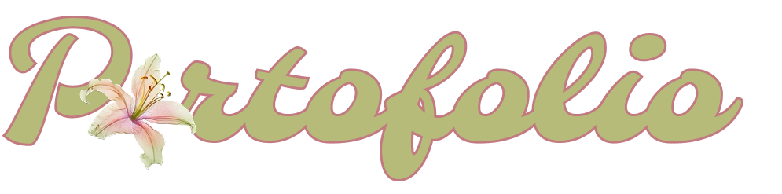
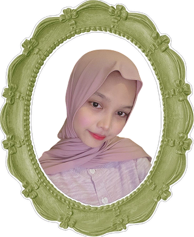
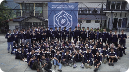
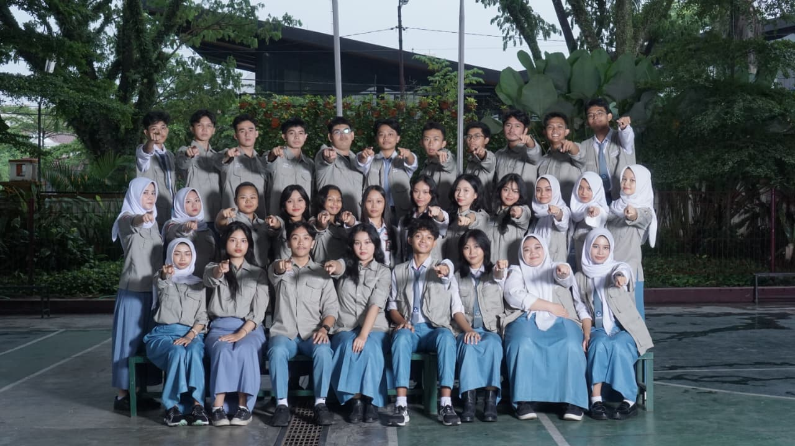
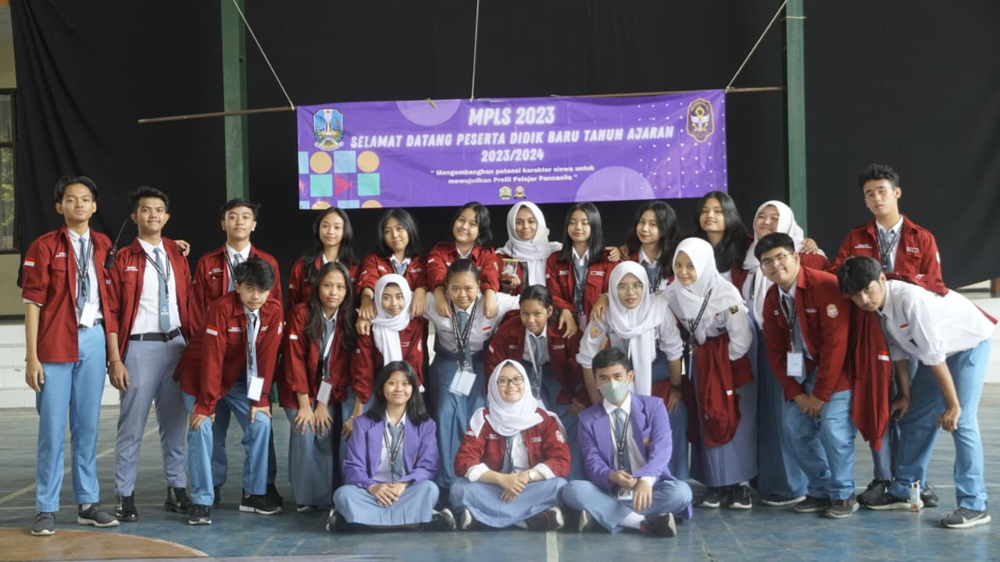
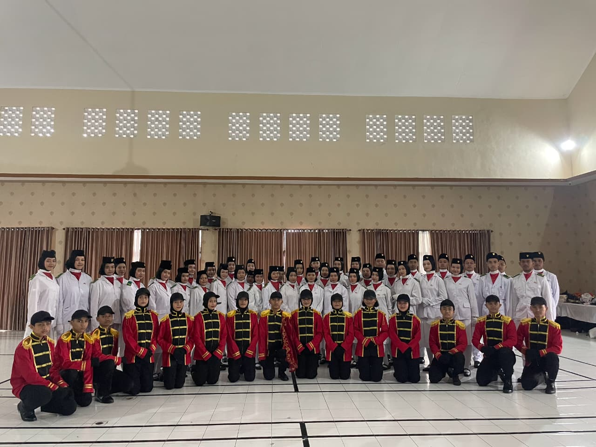

Halo, selamat datang di portofolioku!
Kalau harus mendeskripsikan diri sendiri, aku orangnya selalu ada hal baru yang bikin penasaran dan pengen dicoba.
Buat aku, belajar paling terasa kalau langsung terjun. Makanya aku aktif di berbagai kegiatan, mulai dari organisasi, kepanitiaan, hingga pelatihan yang kadang jauh dari zona nyaman. Bukan karena harus, tapi karena setiap pengalaman selalu meninggalkan sesuatu — entah itu skill baru, perspektif yang berbeda, atau pelajaran yang tidak akan ditemukan di tempat lain.

Di sini aku pegang bagian hubungan masnyarakat (humas), ngurusin komunikasi antar anggota divisi keratif medkominfo dengan departement lain. Di pembagian tugas, aku bertanggung jawab atas dua proker yaitu Point Of You di Youtube dan Studi Banding antar organisasi. Banyak hal yang aku pelajari selama periode ini, terutama soal cara mengatur waktu, komunikasi yang baik, dan upgrading tentang aplikasi kreatif yang digunakan. Karena humas juga harus bisa ngedit juga di Departement Medkominfo ini!

Di sini aku pegang bagian seksi bidang Kepribadian dan Budi Pekerti Luhur sebagai Koordinator, ngurusin hal hal yang berkaitan untuk meningkatkan kepribadian yang baik. Banyak hal yang aku pelajari selama periode ini, terutama soal betapa pentingnya siswa SMA mempunyai kepribadian pengabdian ke pada desa. Tidak banyak program kerja di seksi bidang ini.

Di sini aku pegang bagian seksi bidang Kepribadian dan Budi Pekerti Luhur sebagai Staff, ngurusin hal hal yang berkaitan untuk meningkatkan kepribadian yang baik. Banyak hal yang aku pelajari selama periode ini, terutama soal betapa pentingnya siswa SMA mempunyai kepribadian pengabdian ke pada desa. Tidak banyak program kerja di seksi bidang ini.

Di sini aku pernah jadi penggebrak bendera pada saat 17 Agustus 2024, selain itu aku pernah jadi pembawa baki HUT RRI Kota Malang. Banyak hal yang aku pelajari selama periode ini, terutama soal kepemimpinan dan kedisiplinan.